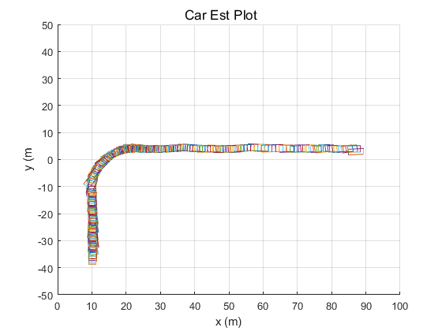
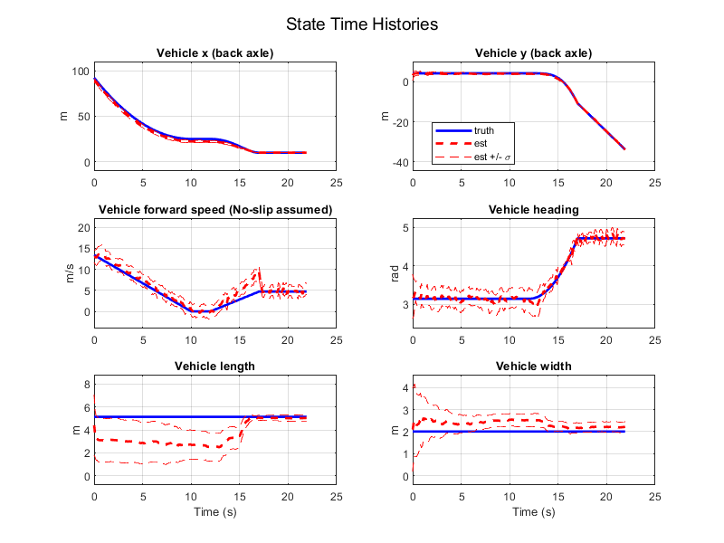

Contents
clear;
dt = 0.1;
Q = diag([0.25 0.25 3 40*pi/180 0.1 0.1])^2 / dt;
R = diag( [2*pi/180, 2*pi/180, 0.1] )^2;
x0 = [90; 4.25; 13; pi; 5; 2];
P0 = diag([2 5 1 pi/4 4 2])^2;
x_hat = x0;
P = P0;
a = 10^-3;
b = 2;
k = 0;
nx = 6;
nz = 3;
nv = 6;
load problem3dataMod.mat
N = length(lidar);
x_hat_arr = [];
UNSCENTED KALMAN FILTER
for j = 1 : N
xa = [ x_hat; zeros(6,1) ];
Pa = [ P, zeros(6); zeros(6), Q ];
DYNAMICS PROPAGATION
Sx = chol(Pa)';
lambda_xv = a^2 * (nx + nv + k) - (nx + nv);
XX = build_SP(xa, Pa, nx, nv, lambda_xv);
XX_prop = [];
for i = 1:length(XX)
[tvec, XX_i_prop] = ode45(@dyn_car, [0 dt], XX(i,:));
XX_i_prop = XX_i_prop(end,:);
XX_prop = [ XX_prop; XX_i_prop ];
end
[x_bar, P_bar] = combine_SP(nx, nv, lambda_xv, a, b, XX_prop);
MEASUREMENT UPDATE
zj = lidar(j).z;
z_rj = zj(:,1);
z_bj = zj(:,2);
z = [ min(z_bj); max(z_bj); min(z_rj) ];
xa_bar = [x_bar; zeros(nz,1)];
Pa_bar = [P_bar, zeros(nx, nz); zeros(nz, nx), R];
lambda_xz = a^2 * (nx + nz + k) - (nx + nz);
XX_bar = build_SP(xa_bar, Pa_bar, nz, nx, lambda_xz);
ZZ_bar = [];
for i = 1:length(XX_bar)
ZZ_i_bar = h_car(XX_bar(i,:));
ZZ_bar = [ ZZ_bar; ZZ_i_bar' ];
end
[z_bar, Pzz] = combine_SP(nz, nx, lambda_xz, a, b, ZZ_bar);
Pxz = calc_Pxz(nx, nz, lambda_xz, a, b, XX_bar, x_bar, ZZ_bar, z_bar);
x_hat = x_bar + Pxz * Pzz^(-1) * [z - z_bar];
P = P_bar - Pxz * Pzz^(-1) * Pxz';
x_hat_arr = [x_hat_arr; x_hat'];
P_arr(:,:,j) = P;
end
ANALYSIS
h = figure;
xlim([0 100]); ylim([-50 50]);
xlabel('x (m)')
ylabel('y (m' )
for i = 1:length(x_hat_arr)
hold on;
plotcar(x_hat_arr(i,:)', '-', h, lidar(i).t);
end
load problem3truth.mat
for i = 1:length(car)
x_truth(i,:) = car(i).x';
t(i,:) = car(i).t;
end
sigma_arr = [];
for i = 1:6
sigma_arr(:,i) = sqrt(squeeze(P_arr(i,i,:)));
end
titles = {'Vehicle x (back axle)';
'Vehicle y (back axle)';
'Vehicle forward speed (No-slip assumed)';
'Vehicle heading';
'Vehicle length';
'Vehicle width'};
units = {'m', 'm', 'm/s', 'rad', 'm', 'm'};
fname = 'State Time Histories';
n = 3; p = 2;
figure('name', fname, 'position', [100 100 800 600]);
for i = 1:6
subplot(n,p,i)
plot(t, x_truth(:,i), 'b', 'linewidth', 2); hold on; grid on;
plot(t, x_hat_arr(:,i), 'r--', 'linewidth', 2);
plot(t, x_hat_arr(:,i) + sigma_arr(:,i), 'r--');
plot(t, x_hat_arr(:,i) - sigma_arr(:,i), 'r--');
title(titles{i});
ylabel(units{i});
bigger_ylim
if i == 5 || i == 6
xlabel('Time (s)')
elseif i == 2
legend('truth', 'est', 'est +/- \sigma', 'location', 'best');
end
end
sgtitle(fname)
 
PART B questions
disp('Part b questions');
fprintf('\n')
disp('Question i: ')
disp('What effects, if any, do the values of a, b, and k have on the final state estimate? ');
fprintf('\n')
disp('Answer:')
disp('Alpha and kappa control the spread of the sigma points around the mean state value.')
disp('The spread of sigma points is proportional to alpha. A larger alpha means a larger spread of sigma points.')
disp('Kappa is a scaling parameter usually set to 0. A larger kappa also means a larger spread of sigma points.')
disp('The square root of kappa is proportional to the spread.')
disp('Beta impacts the weights of the transformed points during state and measurement calculations.')
disp('Beta incorporates a priori knowlege of the state distribution; beta = 2 is optimal for Gaussian distributions.')
fprintf('\n')
disp('Question ii')
disp('What do you notice about the state estimates, in particular length and width, as the target car performs its different maneuvers? ');
fprintf('\n')
disp('Answer:')
disp('The length and width vary in estimate due to the orientation of the car relative to the LIDAR sensors.')
disp('The LIDAR is only able to see certain parts of the car past an inflection point of the motion of the car.')
fprintf('\n')
disp('Question iii')
disp('Why would it be difficult to implement this as an extended Kalman filter? ')
fprintf('\n')
disp('Answer:')
disp('The EKF linearizes a nonlinear function about a single point. ')
disp('As can be seen from the state time histories plots, the truth states have high nonlinearities.')
disp('Computing the Jacobian would be difficult, and linearization would still be less accurate than the unscented transform.')
fprintf('\n')
disp('Question iv')
disp('Why did we choose to use the bearing-bearing-range measurement instead of some other measurement vector? ')
fprintf('\n')
disp('Answer:')
disp('Two bearing measurements and a range measurement are the minimal set required for determing the state.')
disp('At least two bearing measurements are required for determining the length and width of the car.')
disp('Using only bearing data would make the state weakly observable with an inaccurate notion of location.')
Part b questions
Question i:
What effects, if any, do the values of a, b, and k have on the final state estimate?
Answer:
Alpha and kappa control the spread of the sigma points around the mean state value.
The spread of sigma points is proportional to alpha. A larger alpha means a larger spread of sigma points.
Kappa is a scaling parameter usually set to 0. A larger kappa also means a larger spread of sigma points.
The square root of kappa is proportional to the spread.
Beta impacts the weights of the transformed points during state and measurement calculations.
Beta incorporates a priori knowlege of the state distribution; beta = 2 is optimal for Gaussian distributions.
Question ii
What do you notice about the state estimates, in particular length and width, as the target car performs its different maneuvers?
Answer:
The length and width vary in estimate due to the orientation of the car relative to the LIDAR sensors.
The LIDAR is only able to see certain parts of the car past an inflection point of the motion of the car.
Question iii
Why would it be difficult to implement this as an extended Kalman filter?
Answer:
The EKF linearizes a nonlinear function about a single point.
As can be seen from the state time histories plots, the truth states have high nonlinearities.
Computing the Jacobian would be difficult, and linearization would still be less accurate than the unscented transform.
Question iv
Why did we choose to use the bearing-bearing-range measurement instead of some other measurement vector?
Answer:
Two bearing measurements and a range measurement are the minimal set required for determing the state.
At least two bearing measurements are required for determining the length and width of the car.
Using only bearing data would make the state weakly observable with an inaccurate notion of location.
subfunctions
function XX = build_SP(xa, Pa, nx, nv, lambda)
Sx = chol(Pa)';
XX(1,:) = xa';
for i = 1 : nx + nv
XXi = xa' + sqrt( nx + nv + lambda ) * Sx(:,i)';
XX = [ XX; XXi ];
end
for i = nx + nv + 1 : 2*(nx + nv)
XXi = xa' - sqrt( nx + nv + lambda) * Sx(:, i - nx - nv)';
XX = [ XX; XXi ];
end
end
function Pxz = calc_Pxz(nx, nz, lambda_xz, a, b, XX_bar, x_bar, ZZ_bar, z_bar)
w_0m = lambda_xz / (nx + nz + lambda_xz);
w_im = 1 / (2*(nx + nz + lambda_xz));
w_0c = lambda_xz / (nx + nz + lambda_xz) + 1 - a^2 + b;
w_ic = w_im;
Pxz = zeros(size(nx, nz));
N_SP = 2*(nx + nz) + 1;
for i = 1 : N_SP
if i == 1; wP = w_0c;
else; wP = w_ic;
end
xtilde = [ XX_bar(i, 1:nx)' - x_bar ];
ztilde = [ ZZ_bar(i, 1:nz)' - z_bar ];
Pi = wP * (xtilde) * (ztilde)';
Pxz = Pxz + Pi;
end
end
function [x_bar, Pxx_bar] = combine_SP(nx, nv, lambda, a, b, XX_prop)
w_0m = lambda / (nx + nv + lambda);
w_im = 1 / (2*(nx + nv + lambda));
w_0c = lambda / (nx + nv + lambda) + 1 - a^2 + b;
w_ic = w_im;
N_SP = 2*(nx+nv) + 1;
x_bar = zeros(1, nx);
for i = 1 : N_SP
if i == 1; wx = w_0m;
else; wx = w_im;
end
xi_bar = wx * XX_prop(i, 1:nx);
x_bar = x_bar + xi_bar;
end
Pxx_bar = zeros(nx);
for i = 1 : N_SP
if i == 1; wP = w_0c;
else; wP = w_ic;
end
xtilde = [ XX_prop(i, 1:nx) - x_bar ]';
Pi_bar = wP * (xtilde) * (xtilde)';
Pxx_bar = Pxx_bar + Pi_bar;
end
x_bar = x_bar';
end